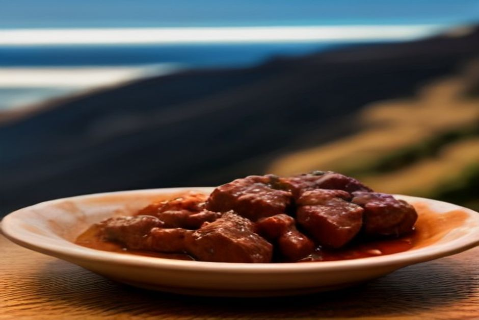
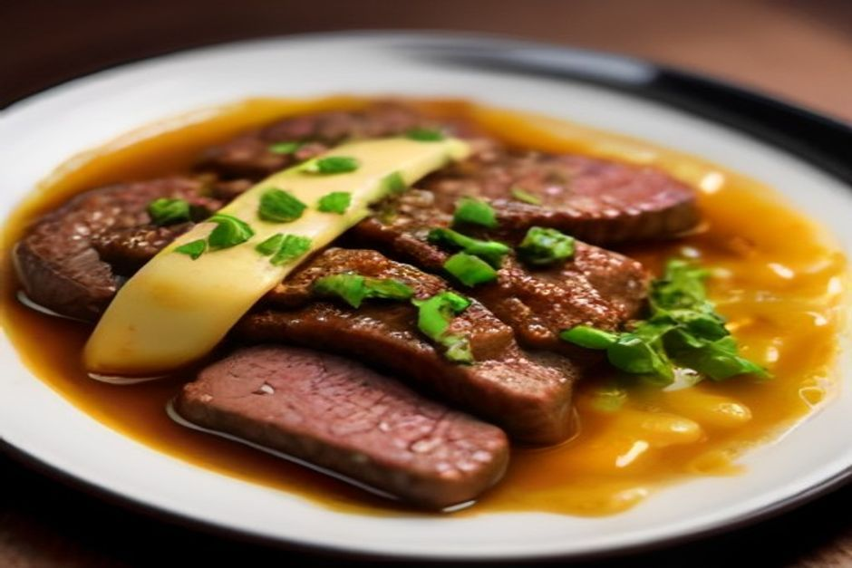

Picado is Madeira's other beef dish — smaller, saucier and made for sharing, and far less known abroad than espetada. Here's what's actually in it, where it came from, and where to order it like you've had it before.
What is picado?
Picado is diced beef — usually rump or sirloin — pan-fried in a hot skillet with garlic, bay leaf, a little chilli and a splash of white wine, then finished with lemon juice just before it hits the table. Unlike most Madeiran meat dishes, it isn't grilled over fire; it's cooked fast in its own juices in a pan, which is where the name comes from — picado means "chopped" or "minced" in Portuguese, referring to how small the beef is cut. It arrives sizzling, still in the pan or on a hot plate, with a pile of cubed fried potatoes on the side and a box of toothpicks for spearing pieces straight from the dish.

Where does picado come from?
Picado grew out of Madeira's tasca culture — small, family-run bars and eateries, concentrated around Câmara de Lobos and Funchal's older streets, that serve food built for lingering over a drink rather than a formal sit-down meal. Beef has always been relatively scarce and prized on the island, since Madeira's steep terraces favour bananas, sugarcane and vines over cattle pasture, so cutting it small and stretching it with garlic, wine and potatoes made it go further while still feeling like a treat. It sits in the same tradition as espetada, but where espetada was food for a feast, picado was food for an evening at the bar.
What's actually in a plate of picado?
The core is simple: diced beef, garlic (often a lot of it), bay leaf, a fresh or dried chilli, salt, and a wine — white or occasionally Madeira wine itself — that reduces into a dark, garlicky sauce as it cooks. Some versions add a touch of butter at the end for shine, or a shot of the pan drippings poured straight over the fried potato cubes. It's always served with two condiments on the side: yellow mustard and a small dish of piri-piri sauce, so each person can spice their own portion rather than the whole dish being cooked hot. Bread is usually on the table too, for mopping up the garlic-wine sauce once the beef is gone — arguably the best part of the dish.
How is picado different from espetada?
Espetada is a full skewer of beef chunks — sometimes over a metre of bay-laurel stick — grilled over an open charcoal fire and served hanging above your plate as a main course, usually with bolo do caco and fries. Picado is diced much smaller, pan-fried rather than grilled, sauced rather than dry, and portioned to be shared from one dish with toothpicks rather than eaten with a knife and fork each. In practice, espetada is what you order as your meal; picado is what lands on the table alongside a poncha while you're still deciding what else to order — a starter, a snack, or the whole night's food if the group is small.
Where can you eat the best picado in Madeira?
Câmara de Lobos is the reference point — the fishing village's small harbourside tascas have been serving picado alongside home-poured poncha for generations, and it's usually the first thing regulars order without opening the menu. In Funchal, look for it on the petisco or "para partilhar" (to share) section of a menu rather than the mains, in the older streets around the Zona Velha and away from the beachfront restaurants aimed squarely at tourists. It's a dish that rewards asking a local rather than searching online — every tasca has its own ratio of garlic to wine, and the difference between a good one and a forgettable one is entirely in that pan sauce.
How do you order and eat picado like a local?
Order it to share, not per person — one pan for two or three people is standard, alongside poncha or a jug of house wine. Use the toothpicks provided rather than cutlery, spear a cube of beef, dip it in mustard or piri-piri to taste, and follow it with a fried potato cube from the same plate. Save a piece of bread for the end — dragging it through what's left of the garlic-wine sauce is the part regulars actually order the dish for. It's food built for conversation, not for rushing, which is exactly why it works so well as the first thing on the table when a group sits down.
We keep the same instinct on board — good Madeiran food, unhurried, shared. On a Chifbay day trip, drinks and food come with you on the water, so the same slow, sociable pace that makes picado work at a harbourside tasca carries straight onto the boat between swim stops.
Can you make picado at home?
Yes, and it travels well — the dish needs a hot pan more than any specialist equipment. Dice good rump or sirloin steak into 2cm cubes, sear it hard and fast in olive oil with plenty of crushed garlic, a bay leaf and a sliced chilli, then deglaze with a small glass of dry white wine and let it bubble down for a minute before a squeeze of lemon. Serve immediately with fried or roasted potato cubes and both mustard and piri-piri on the side — the beef overcooks fast once it's out of the pan, so this is a dish best eaten within a minute or two of leaving the heat.

Espetada is the dish you plan a meal around. Picado is the dish that starts one.
If espetada is Madeira's headline act, picado is the warm-up nobody skips — smaller, garlicker, and usually the first plate empty on the table.